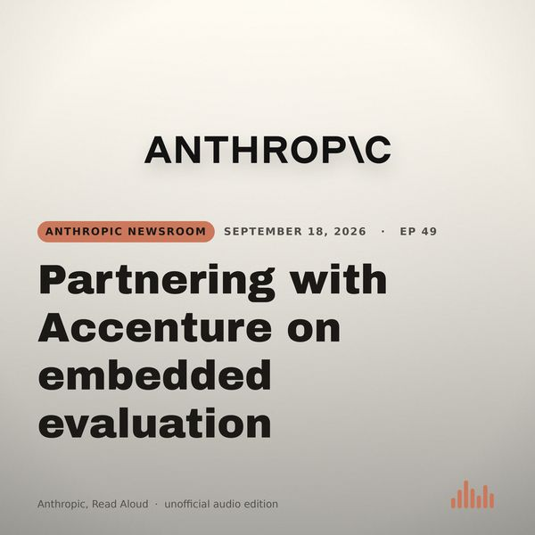

News
Partnering with Accenture on embedded evaluation
We’re partnering with Accenture on independent evaluation of frontier AI—part of our recent commitment to embed evaluators at Anthropic. Both we and Accenture expect to invest at least $1 billion to build capacity in this area over the next five years.